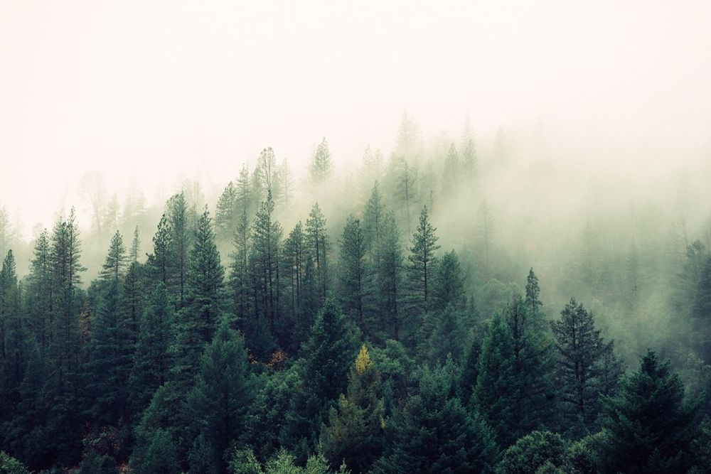
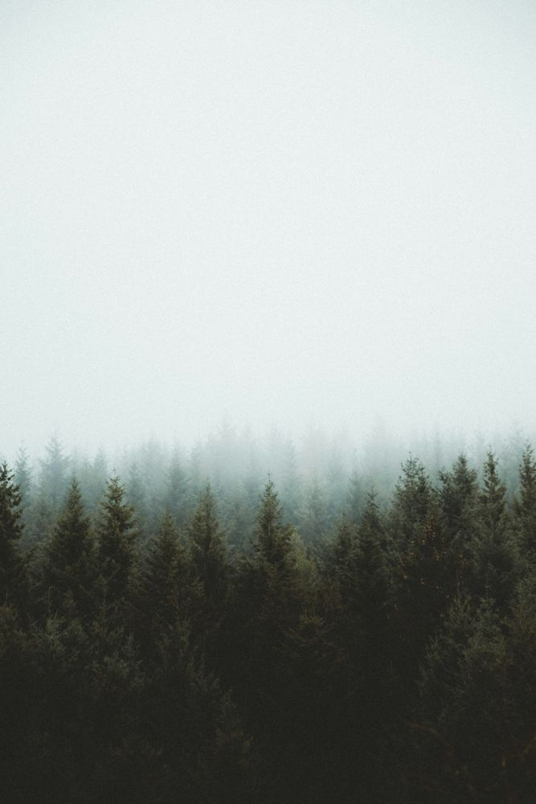
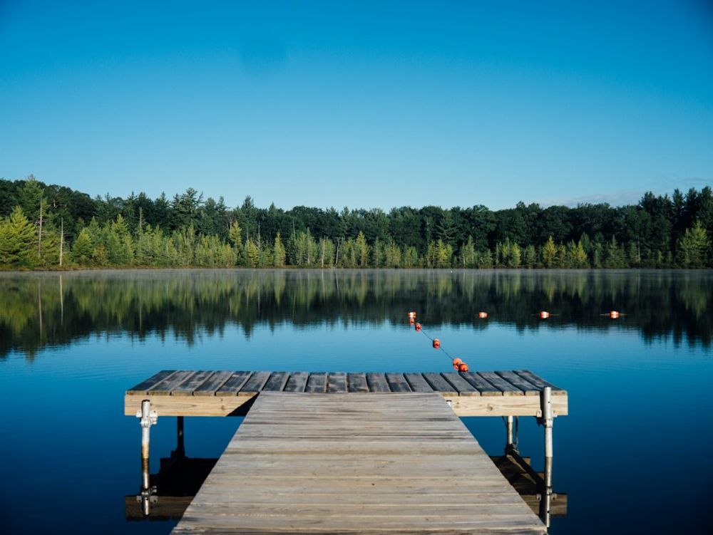
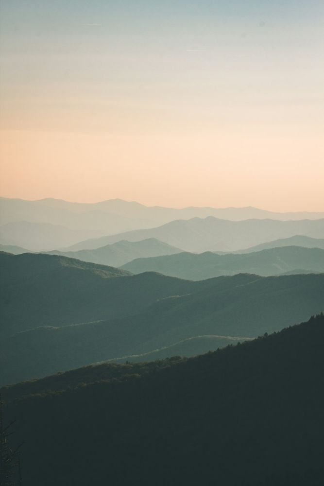

Three directions for Batches
Each direction takes a different named style from the ui-ux-pro-max style library: Editorial Grid / Magazine, Nature Distilled and Modern Dark (Cinema Mobile). Each one mocks the same four screens: Desk, Batch, Photo viewer and Friends. All three keep the personal, warm tone and fix the specific UX-guideline failures found in the build 11 App Store renders listed below.
What the current renders get wrong
Checked against the skill's priority list (accessibility → touch → style → layout → type/colour → navigation). Contrast ratios are estimated from the shipped tokens (linen #E3DBCC, ink3 #9A9488, ink2 #6F6A60, accent #B36B14).
"3 batches · 12 frames", "5 frames · Oct 27 · Highway 1", "@maya.r · 2 days ago" use light grey mono on linen. The minimum is 4.5:1 (color-contrast). Even ink2 is only about 3.9:1.
"+ Add a description", "Followers"/"1 person" chips, the Cover star label, Cancel/Done, and the amber back chevron on a tan circle. White on the amber "Batches" segment is about 4.2:1, so it also misses AA at that size.
The ♥ 3 / 💬 1 counts on the Desk and the "01 ★ Cover" row are about 20pt high. The dotted frame scrubber on the Batch's right edge needs precise taps (no-precision-required). The underlined "2 followers · 1 following" links are about 14pt.
On the Desk and Friends screens the "Joshua Tree overnight" metadata and the third card's photos sit under the pill. Content needs a bottom inset (fixed-element-offset). On the Batch screen the toolbar sits on top of photo 02.
On the Desk, about 90pt of empty linen sits between the hero pile and "Big Sur, one afternoon", so the caption reads as belonging to the next row (proximity). The tilted film-strip pile for Joshua Tree crops every frame.
The photo viewer is pure #000 with system controls, unlike the paper app around it. The Group batch switches to near-black with a yellow (#F0B54A-ish) CTA that doesn't match the amber elsewhere. Sprocket holes add noise that doesn't help with any task.
Friends has an unexplained dot with no count (tab-badge). The selected Desk tab differs from Friends only by colour (color-not-only). The grid toggle next to the filter chips is icon-only and has no label.
There's no "2 of 5", batch name or frame strip, so people can't tell where they are or jump between frames. Like, Comment and Share are icon-only, and Share sits alone at the far right.
On a Friends card, "+ Add yours" (amber, filled) competes with the global "+" FAB. The Batch toolbar puts "Add photos" in the same pill as three tools. The skill's primary-action rule asks for one primary action per screen.
On the Share sheet, "Add by name or @handle" has no visible label beyond the section caption. The privacy note ("Small copies only…") is grey on linen at about 3.9:1.
The Issue
Style: Editorial Grid / MagazineEach person's Desk reads like a small printed magazine, and every batch is a feature with a kicker, headline, deck and numbered figures. This keeps the paper warmth and drops the skeuomorphic piles. Hierarchy comes from type and hairline rules, not shadows. The skill rates this style WCAG AAA and low complexity, which suits SwiftUI Text styles and Dividers.
Palette
Font pairing · "Magazine Style"
Fixes
- Contrast: metadata goes to Ink 2 on Paper (6.9:1) and the accent to oxblood (6.8:1), replacing about 2.2:1 and 3.0:1.
- Hierarchy: the cover story sits directly above its headline. The rest is a numbered contents list, so there's no floating caption.
- Navigation: a solid tab bar with a reserved inset. The active tab gets weight and an underline as well as colour, and "New" is a labelled tab instead of a FAB.
- Viewer: stays on paper, shows "Plate 2 of 5", and uses three labelled 48pt actions.
kevin
Autumn 2026

Big Sur, one afternoon
5 frames · Oct 27 · Maya and Theo liked and commented
- 02Joshua Tree overnight1 person · 4 frames

- 03Fog over the bayOnly me · 3 frames

Big Sur, one afternoon
Drove down after lunch, chased the fog line until it gave up.


This one has to be the cover. So good.Maya R · 2 days ago · 1 of 1 comments
Friends
Tomales Bay kayak



Mono Lake sunrise

Field Journal
Style: Nature DistilledMost of the library is landscape, and Nature Distilled turns linen and amber into a sun-faded journal: cream, sand, clay, olive, soft uneven corners. It's the closest relative of the current look, but it adds what the current look lacks: tinted visibility chips with icons, grouping by season, and a warm-charcoal viewer instead of pure black. The skill rates it WCAG AA with excellent performance. The softness comes from radii and tint, not blur or texture.
Palette
Font pairing · "Wellness Calm"
Fixes
- Contrast: terracotta is used only for decoration. Text accent is clay (5.9:1) and metadata is
#5E554A(6.3:1). - Color-not-only: each visibility state gets its own tint, icon and word (Followers olive, Only me clay, Group violet).
- Primary action: one labelled "New batch" button in the nav. "Add yours" moves inside the batch.
- Viewer: warm charcoal, a 44pt thumbnail strip for position, and comments in a bottom sheet with a labelled reply field.
kevin
3 batches · 2 followers
Big Sur, one afternoon

Joshua Tree overnight
Mono Lake sunrise
Lee Vining, Nov 9. Up at five, worth it.
TTheo · cover
Maya R This one has to be the cover. So good.2 days ago
Friends
4 new since Tuesday
Theo1 new Anaseen
AnaseenTomales Bay kayak
Darkroom
Style: Modern Dark (Cinema Mobile)The photos are the only light source. The whole app takes the viewer's dark world, so opening a photo no longer changes the theme, and a single safelight amber marks frame numbers, the one primary action and unread counts. It follows the skill's rule for this style: avoid pure #000, which smears on OLED, and use warm near-black #0E0D0C with hairline borders and frosted material only where it signals a layer.
Palette
Font pairing · "Modern Dark Cinema (Inter System)"
Fixes
- Consistency: one theme everywhere. It also fixes the Group screen's mismatched yellow, because amber is now a token.
- Contrast: secondary text at 7.5:1 and amber at 9.1:1 on base. Frame numbers no longer drop to dark-grey-on-black.
- Badges: "Friends 4" and "4 new" replace the unexplained dot (
tab-badge). - Viewer: "02 / 05", a 44pt filmstrip scrubber that replaces the dotted edge rail, and a labelled glass action bar.
kevin
3 batches · 12 frames · 2 followers
Big Sur, one afternoon
3 likes · 1 new0102Joshua Tree overnight
0102
04Big Sur, one afternoon
Oct 27, 2026 · Highway 1 · 5 frames
Maya R This one has to be the cover. So good.
Friends
Following 1 · 2 followers
Tomales Bay kayak
0203Mono Lake sunrise
01